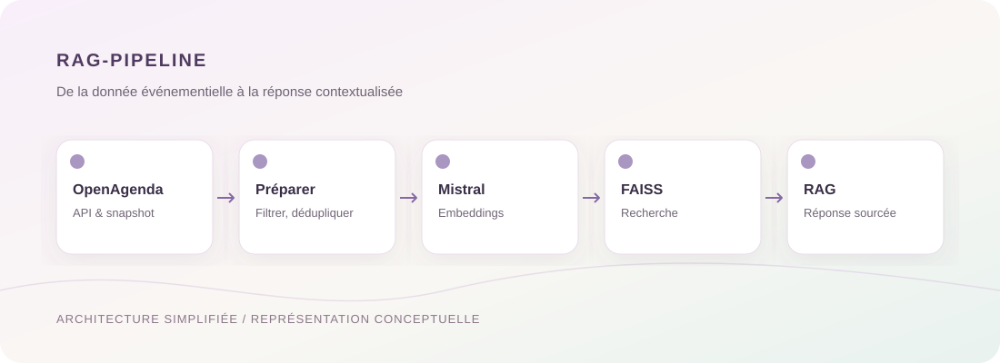

Étude de cas détaillée
NLP / Recherche sémantique
Lire l'étude de cas
Puls-Events RAG
Concevoir un assistant de découverte d'événements culturels combinant données OpenAgenda, recherche vectorielle et réponses contextualisées.
12 763événements uniques
0,9545MRR
74tests réussis